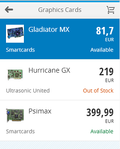
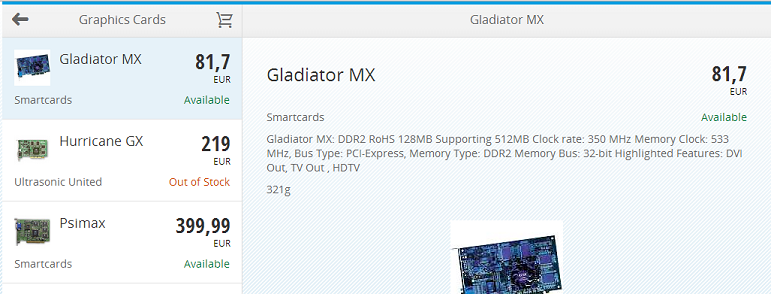
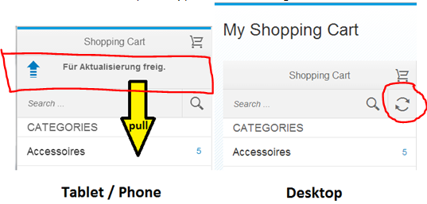

Device Model
Motivation
Some device adaptions are done automatically by the sap.m controls. But some can only be done on application level as they depend on the context of the control.
Examples for Device Adaption on Application Level
List Mode
A prominent example is a list in a master detail pattern. On the phone the list has active list items which trigger the navigation to the next page. On the tablet the list is in selection mode instead.
List with active items on the phone

List in selection mode on the tablet

Refresh
On touch devices (Tablet / Phone) the Pull To Refresh pattern is used to trigger a refresh. On non-touch devices (Desktop) the Search Field gets an additional refresh button:

Nav Buttons
Nav Buttons of Detail pages in a SplitApp? are only shown on the phone
Footers
Empty Footers in pages in a SplitApp? are only shown on the tablet to have 1 consistent footer area across master/detail page
Device Model
Basically you should put all device related information that is required by the views in a central model named "device".
sap.ui.app.Application.extend("Application", { init : function () { ... // set device model var deviceModel = new sap.ui.model.json.JSONModel({ isTouch : sap.ui.Device.support.touch, isNoTouch : !sap.ui.Device.support.touch, isPhone : jQuery.device.is.phone, isNoPhone : !jQuery.device.is.phone, listMode : (jQuery.device.is.phone) ? "None" : "SingleSelectMaster", listItemType : (jQuery.device.is.phone) ? "Active" : "Inactive" }); deviceModel.setDefaultBindingMode("OneWay"); sap.ui.getCore().setModel(deviceModel, "device"); ...
You can than easily refer to it in all the application's views.
<List mode="{device>/listMode}" select="handleProductListSelect" noDataText="{i18n>HOME_NO_DATA}" items="{items}"> <items> <ObjectListItem type="{device>/listItemType}" title="{Name}" />
 It is important to run the model in "OneWay" binding mode to not accidantly change the device model from the control. E.g. by the initial collapsed state of a tab against "isPhone" and then change the isPhone when tab state changes.
It is important to run the model in "OneWay" binding mode to not accidantly change the device model from the control. E.g. by the initial collapsed state of a tab against "isPhone" and then change the isPhone when tab state changes.